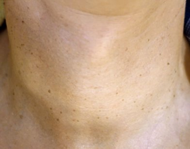
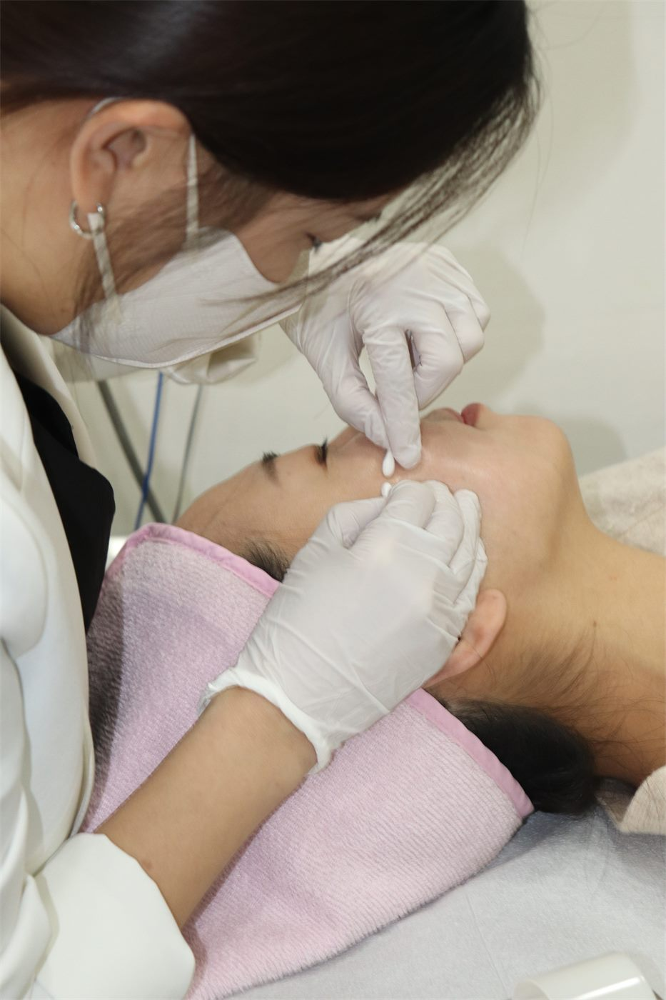
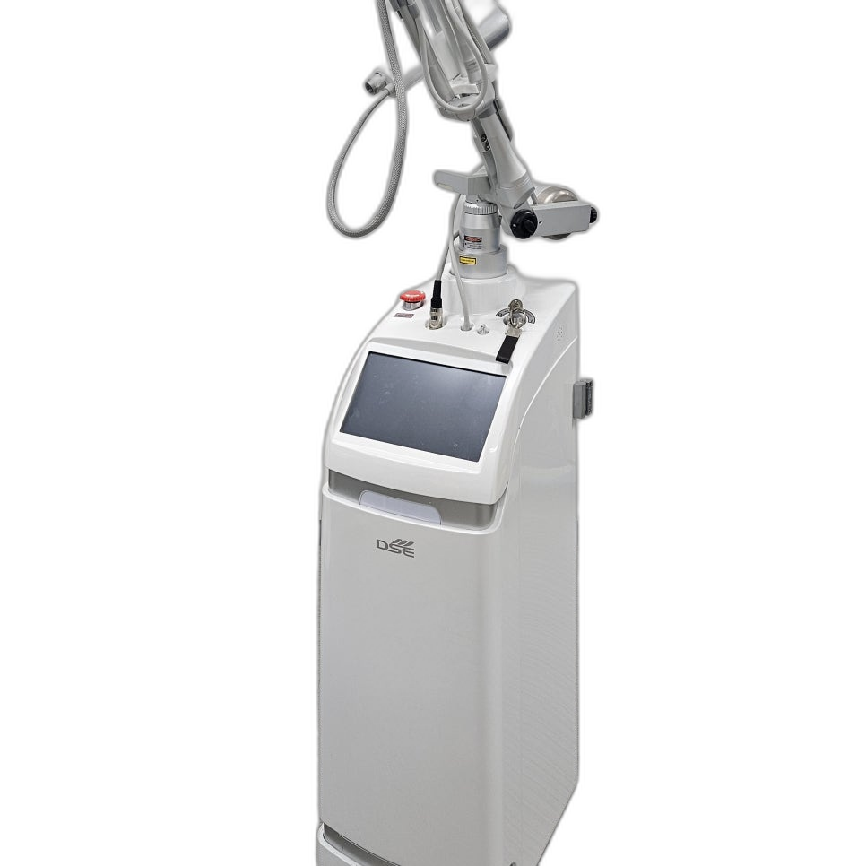
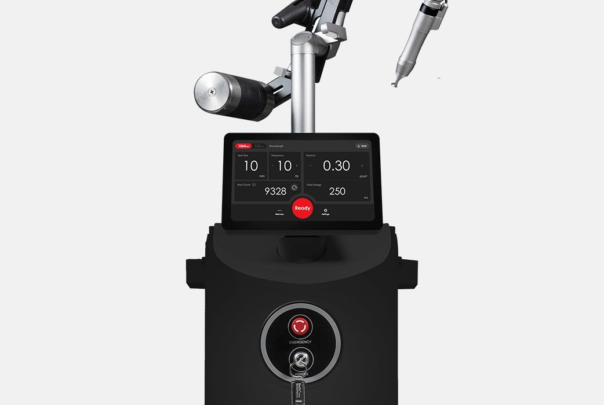
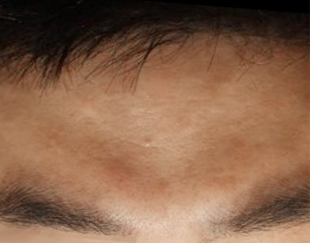

목 · 18일
목 부위 편평사마귀 — 18일 만에 깔끔하게 정리된 사례
23.05.04 → 23.05.22
WHAT IS FLAT WART
편평사마귀는 HPV(인유두종 바이러스)에 의해 생기는 피부 질환이에요. 일반 사마귀보다 납작하고 작아서 처음엔 그냥 피부 트러블로 착각하기 쉽습니다. 특히 강남편평사마귀는 면역력이 떨어졌을 때 갑자기 번지는 경우가 많아요.
피부색 · 갈색빛
피부색이거나 약간 갈색빛을 띠는 작은 돌기로 시작됩니다.
매끈하고 납작한 표면
표면이 매끈하고 납작해서 여드름·잡티와 헷갈리기 쉬워요.
얼굴 · 목 · 손등
얼굴, 이마, 목, 손등처럼 노출이 잦은 부위에 잘 생깁니다.
빠르게 번짐
긁거나 건드리면 그 자리에서 바로 번지는 속도가 빨라져요.
WHY REMOVE EARLY
강남편평사마귀의 가장 큰 문제는 바로 번진다는 거예요.
바이러스성이기 때문에 손으로 긁거나 면도기로 건드리면 그 자리에서 바로 퍼져나가요. 5개였던 게 한 달 만에 20~30개가 되기도 합니다.
오래 방치할수록 제거 후 색소침착이나 흉터가 남을 가능성도 높아집니다. 발견 즉시 제거하는 편이 회복도 빠릅니다.
자연 소멸을 기대하며 미루는 동안 개수와 부위가 늘어나면, 치료 범위와 비용 부담도 함께 커질 수 있습니다.
TREATMENT METHOD
편평사마귀를 포함한 여러 종류의 잡티는 병변의 크기와 깊이, 그리고 특성이 다릅니다.
작아 보여도 실제로는 깊이 자리 잡은 경우가 있고, 반대로 보이는 면적은 큰데 얕게 위치한 경우도 있습니다.
그래서 후한의원 강남점은 편평사마귀 · 쥐젖 · 비립종 · 한관종 · 피지선증식증 · 검버섯 · 점 등
질환에 따라 복합시술을 적용하여, 최소한의 상처가 남으면서 제거 효과는 높게 유지하기 위해 최선을 다하고 있습니다.

A. NEEDLE THERAPY

B. CO2 LASER

C. ND:YAG LASER
세 가지를 병변 특성에 맞춰 나눠 쓰면 넓은 범위를 무리하게 침습적으로 치료할 필요가 없어지고,
제거 후 회복까지 함께 관리할 수 있습니다.
PRICE GUIDE
편평사마귀 · 비립종 · 쥐젖 동일 가격으로 제거
순식간에 번지고 전염되는 편평사마귀. 반복되는 재발과 악화는 피부 면역력 문제인 경우가 많아
원인을 파악한 뒤 내적 · 외적 치료로 함께 개선하는 것이 좋습니다.
통증이 적고 치료 시간이 짧아 일상생활에 빠르게 복귀할 수 있는 치료를 찾으신다면 후한의원 강남점에서 상담받아 보세요.
FACE & NECK
얼굴과 목을 함께 진행합니다
20개 한도
99,000원
초과분 1개당 5,000원
50개 한도
199,000원
초과분 1개당 4,000원
100개 한도
330,000원
초과분 1개당 3,300원
BODY
가슴 · 복부 · 등 · 허리 등
20개 한도
149,000원
초과분 1개당 7,500원
50개 한도
299,000원
초과분 1개당 5,000원
100개 한도
440,000원
초과분 1개당 3,300원
개수는 원하시는 만큼 체크해 드립니다
가장 신경 쓰이고 놓치고 싶지 않은 부위를 의료진과 충분히 대화하며 꼼꼼하게 체크합니다. 다수의 대표원장 의료진과 10여 명의 전문 스텝이 예약 · 내원 · 전처치 · 본시술 · 후처치 · 주의사항 안내 · 후관리 전 과정에서 각자의 역할에 최선을 다합니다.
※ 위 금액은 이벤트 진행 시점 기준이며 변경될 수 있습니다. 정확한 비용은 상담 시 확인해 주세요.
※ 개인에 따라 시술의 효과는 차이가 있을 수 있으며, 부작용이 발생할 수 있습니다.
DIFFERENTIAL DIAGNOSIS
겉모양이 비슷해도 원인과 치료 방법이 다를 수 있어, 정확한 감별이 먼저입니다.
피부 결합조직이 늘어지면서 생기는 작은 돌기로, 편평사마귀와 달리 전염성이 없습니다. 목이나 겨드랑이처럼 마찰이 잦은 부위에 잘 생기며, 편평사마귀 제거 시 함께 정리할 수 있습니다.
BEFORE & AFTER

목 · 18일
목 부위 편평사마귀 — 18일 만에 깔끔하게 정리된 사례
23.05.04 → 23.05.22


이마 · 약 2개월
이마 편평사마귀 — 약 2개월 치료 후 말끔히 정리된 사례
23.02.13 → 23.04.11


헤어라인 · 사율침+레이저
헤어라인 편평사마귀 — 사율침+레이저 병행 치료 사례
21.03.01 → 21.05.25


볼 · 20일
볼 부위 편평사마귀·색소 병변 — 20일 만에 개선된 사례
23.07.25 → 23.08.15
개인에 따라 시술의 효과는 차이가 있을 수 있으며, 부작용이 발생할 수 있습니다.
의료진과 충분한 상담 후 시술을 진행하셔야 합니다.
DOCTORS
5인의 대표원장이 진료합니다.
병변의 종류와 깊이에 따라 침 치료와 레이저 제거의 비중을 나눠 접근합니다.

FAQ
CONSULTATION
전화, 카카오톡, 네이버 예약 채널을 통해 편평사마귀와 유사 피부 병변 상담을 진행합니다.
진료시간
월 · 화 · 수 · 목 · 금 11:00 – 20:30
토요일 10:00 – 15:00 (점심시간 없음)
일요일 휴진
평일 점심시간 13:00 – 14:30
HOO KOREAN MEDICAL CLINIC
후한의원 강남점에서 부담 없는 가격으로 깔끔하게 정리해드릴게요.
지금 전화 상담하기